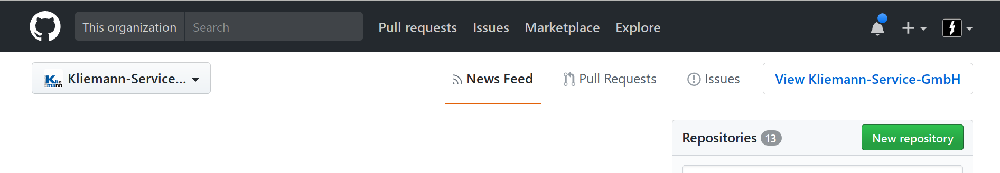
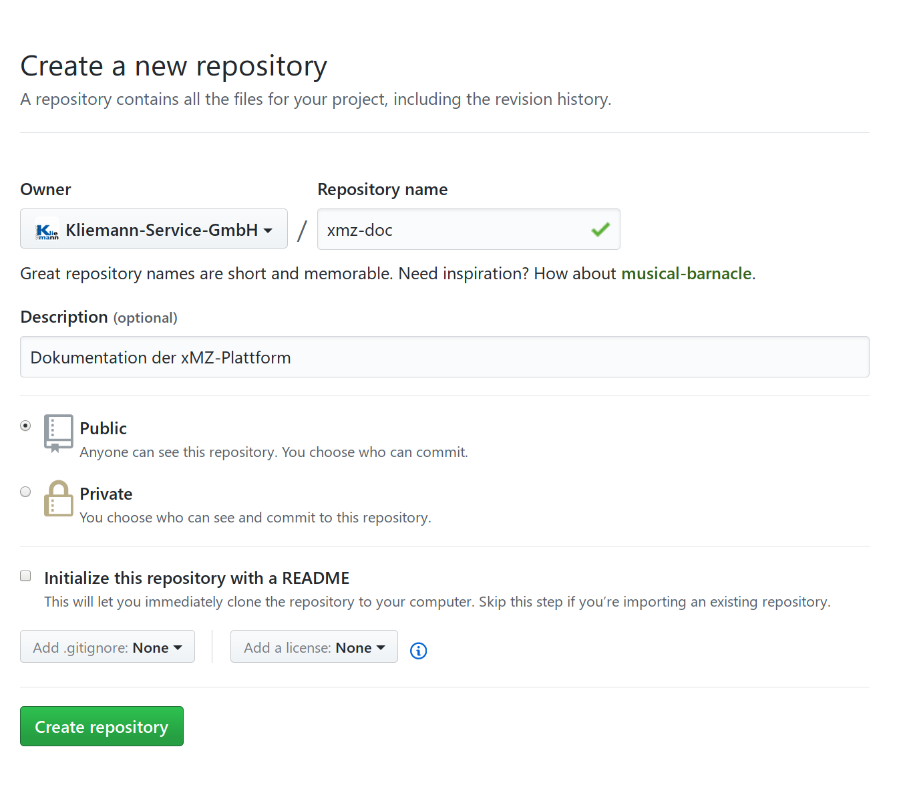
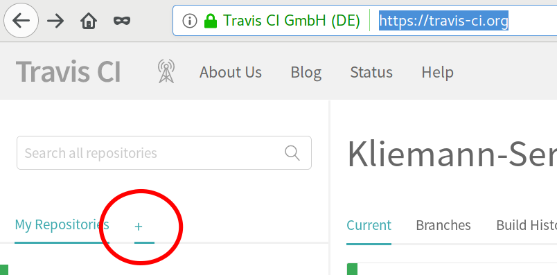
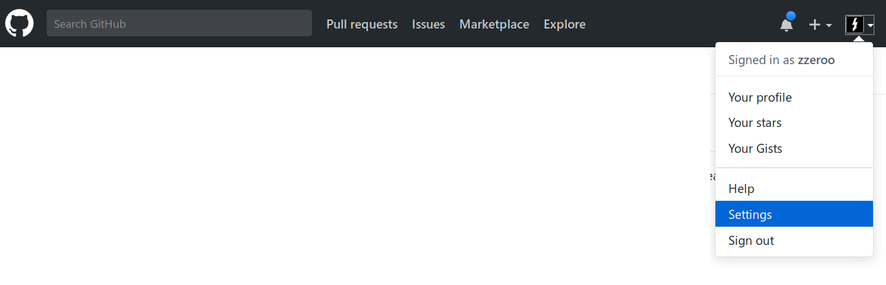
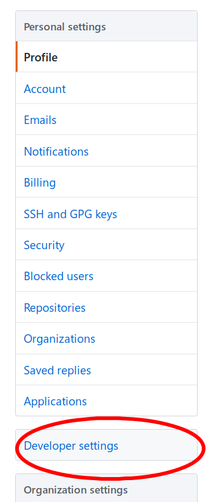
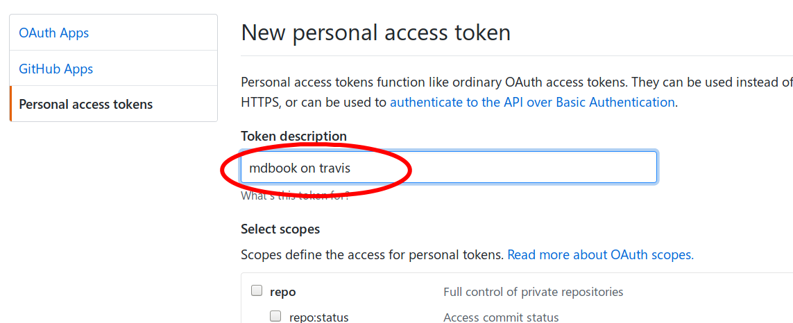
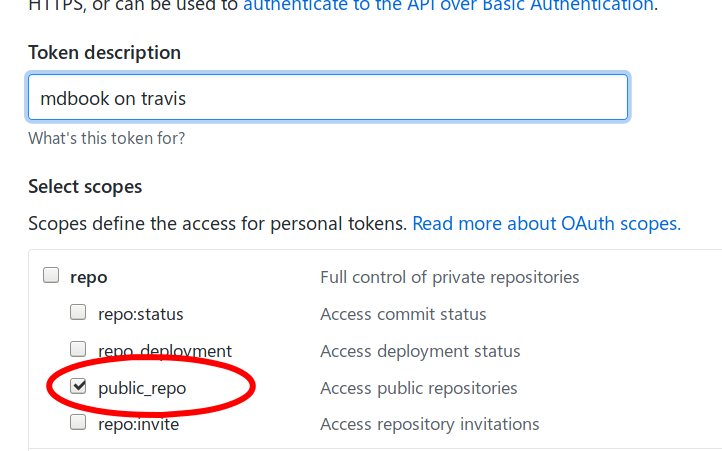
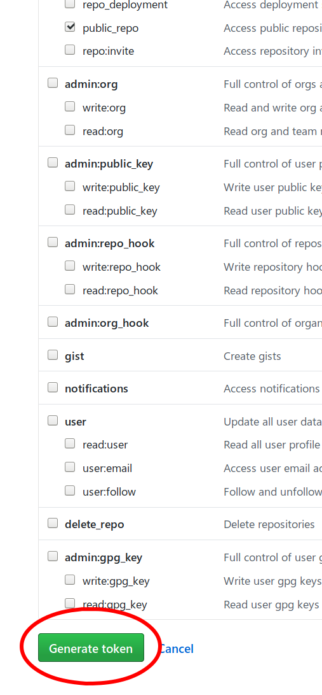
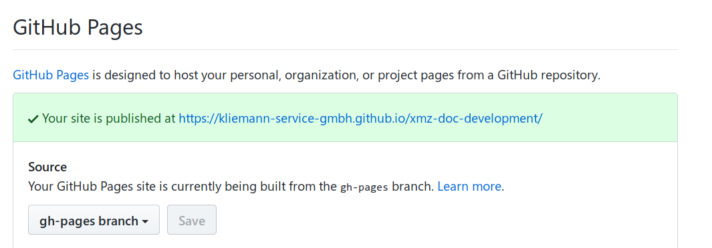

Erstellung der Dokumentation
Die Dokumentation wird via Github Pages gehostet.
Branch gh-pages
URL https://$USERNAME.github.io/$REPOSITORY
Gebaut mit TravisCI
Travis ist die Quelle des allseits beliebten Badges wie diese 
Installation mdBook
Wie auf der mdBook Projektseite beschrieben wird vorab die Software mdBook auf dem lokalen Entwickler PC installiert.
cargo install mdbook
Dateisystemlayout erstellen
Als nächstes wird ein Verzeichis erstellt das den Quellcode des mdBook enthält.
mkdir xmz-doc
Git Repository erstellen
Wie alle Komponenten der [xMZ-Plattform][xmz] wird auch der Quellcode des mdBook in der Versionskontrolle GIT, auf Github gehalten.
Wir erstellen also nun erst einmal ein lokales, leeres Git Repository
cd xmz-doc
git init .
mdBook initalisieren
Nun wird ein leeres mdBook initalisiert. Hierbei werden ein paar grundlegende Dateien angelegt.
Die Frage ob eine .gitignore Datei angelegt werden soll muss mit ja (y) beantwortet werden.
mdbook init .
Git Repo füllen
Das Dateisystemlayout sollte nun in etwa so aussehen:
$ tree
.
├── book
├── book.toml
├── LICENSE
├── README.md
└── src
├── chapter_1.md
└── SUMMARY.md
2 directories, 5 files
Die Dateien README.md und LICENSE habe ich manuell eingefügt, dieser Schritt ist optional.
Mit dem Befehl
git add .
werden nun die Dateien in die Git Versionskontrolle aufgenommen. Das heist Dateien und Ordner die in der .gitignore Datei gelistet sind werden ignoriert.
Anschließend wir mit dem Befehl,
git commit -a -m "Erster Commit, mdBook Grundstruktur"
dieser Stand in die Änderungsliste aufgenommen.
Git Repo auf Github veröffentlichen
Als nächstes legen wir auf Github.com ein Repository an.
Klickt dazu in eurem Profil auf den grünen "New repository" Button ...

und füllt die entsprechenden Felder aus.

Nachdem auf den grünen Button "Create repository" geklickt wurde kann die Remote Adresse in das lokale Git Repository eingetragen werden.
git remote add origin git@github.com:Kliemann-Service-GmbH/xmz-doc.git
Anschließend wird der master Branch in den remoten Origin Zweig gepusht.
git push -u origin master
Das Repository ist nun unter der URL https://github.com/Kliemann-Service-GmbH/xmz-doc erreichbar.
Repo in Travis aktivieren
Als nächstes müssen wir das Github Repository in Travis aktivieren.
Dazu öffnen wir die URL https://travis-ci.org/ im Browser.

Ein Klick auf das Plus Symbol führt zu einer Übersicht der Github Repositories.
Travis aktualisert die Liste nicht automatisch wenn wir auf Github ein neues Repo erstellt haben müssen wir mit dem Button Sync account die Travis-Repo-Liste aktualisieren.

Anschließend wird mti dem kleinen Schalter vor dem Namen des Repos das Repository in Travis aktiviert.


Travis einbinden
Travis benutzt die Datei .travis.yml zur Konfiguration.
Lege nun diese Datei im Root der mdBook Quellen an.
language: rust
branches:
only:
- master
before_install:
- set -e
- rustup self update
install:
- source ~/.cargo/env || true
- true
script:
- true
after_success: |
[ $TRAVIS_BRANCH = master ] &&
[ $TRAVIS_PULL_REQUEST = false ] &&
cargo install --git https://github.com/rust-lang-nursery/mdBook.git &&
mdbook build &&
sudo pip install ghp-import &&
ghp-import -n book &&
git push -fq https://${GH_TOKEN}@github.com/${TRAVIS_REPO_SLUG}.git gh-pages
Travis Berechtigungen
Jetzt muss der Zugriff von Travis auf unser Github Repository aktiviert werden.







Schließe das Fenster nicht! Der Token ist nur in diesem Moment sichtbar. Im nächsten Befehl musst du $YOUR_TOKEN durch den grün hinterlegten Token ersetzen.
travis encrypt GH_TOKEN=$YOUR_TOKEN --add env.global
Jetzt kann das Fester mit dem Token geschlossen werden. Der letzte Befehl hat die Datei .travis.yml verändert und eine secure: Sektion angefügt.
Die Datei .travis.yml wird nun auch in die Versionskontrolle aufgenommen.
git add .travis.yml
git commit -m "Add Travis"
git push
Travis Results
Nun sollte unter der URL https://$YOUR_GITHUB_USER.github.io/$YOUR_REPO das gerenderte mdBook aufzurufen sein.
Die Github Einstellungen findet man unter //Settings// -> //Github Pages//
